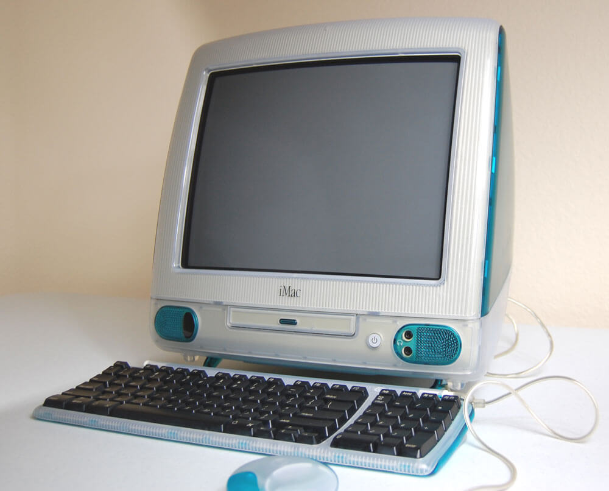

I remember the first time I felt connected to technology. I was about 5 years old, and I sat down in front of our iMac G3 (circa 1998). I’d spend hours exploring the computer, not realizing that in about 21 years, that this technology & the internet would more or less be crowned King.
Now, I’ve harnessed my connection to technology, and coding has given me the ability to show creativity, and use my problem solving abilities to their highest form. When I’ve completed a new feature, or an entire project for that matter, the feeling is unmatched! I’m a CSS junkie, but sit me down in front of some JavaScript and I can plug in for hours.